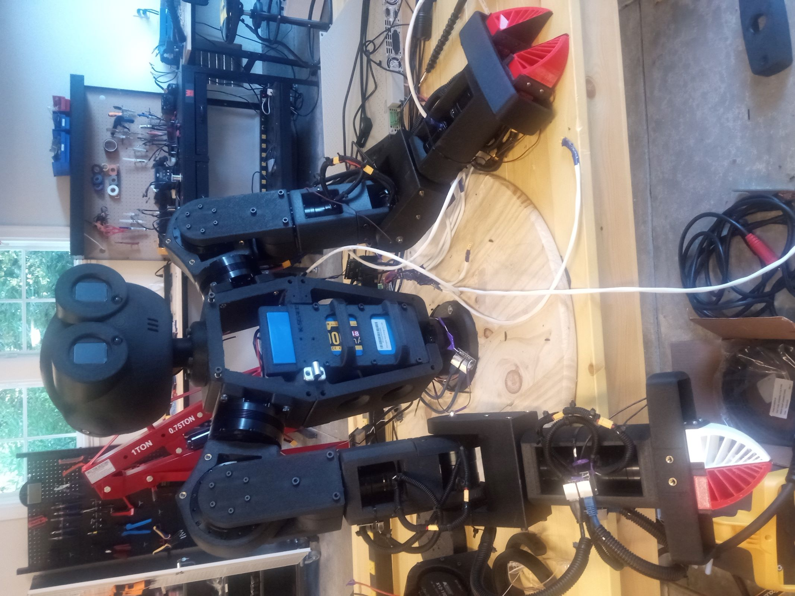
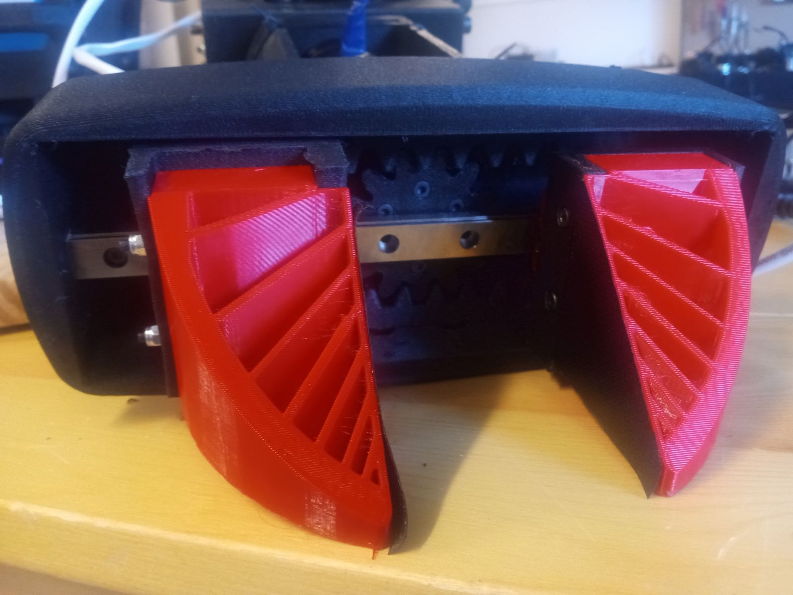
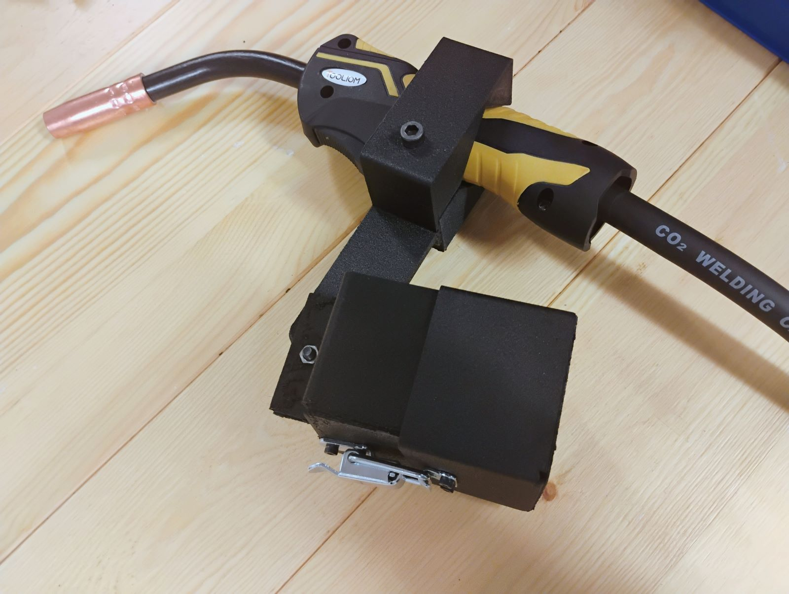
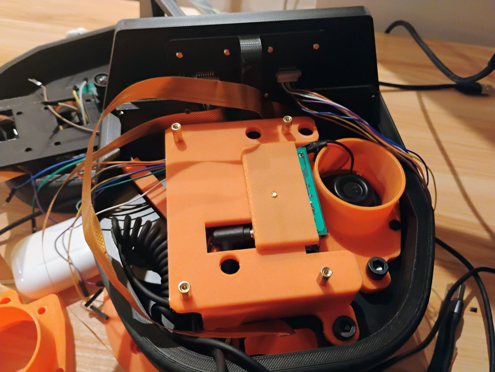
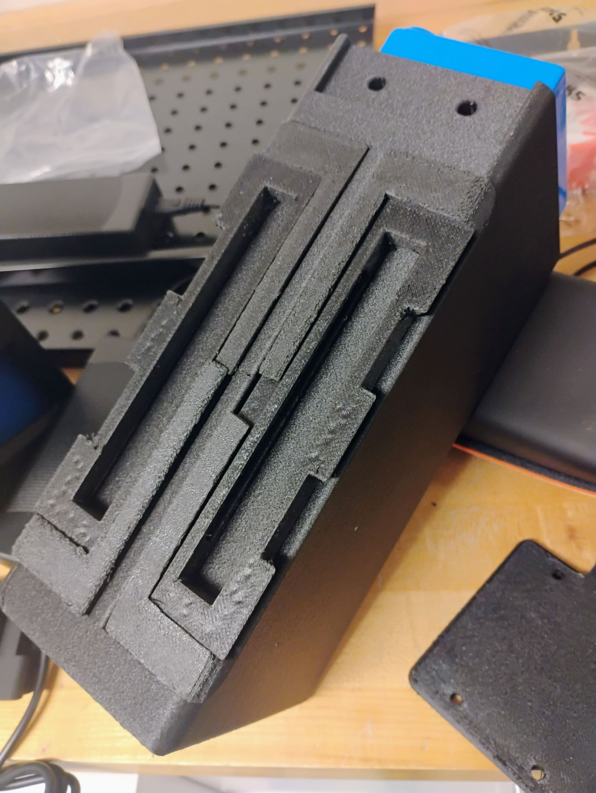
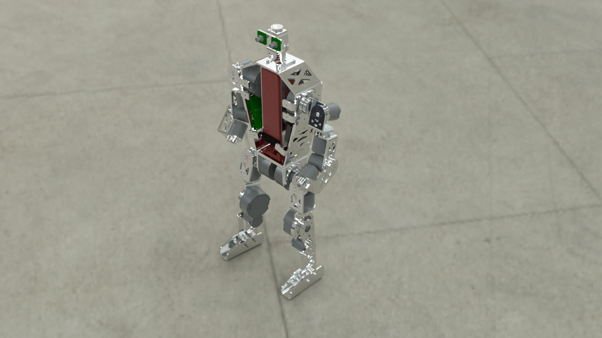
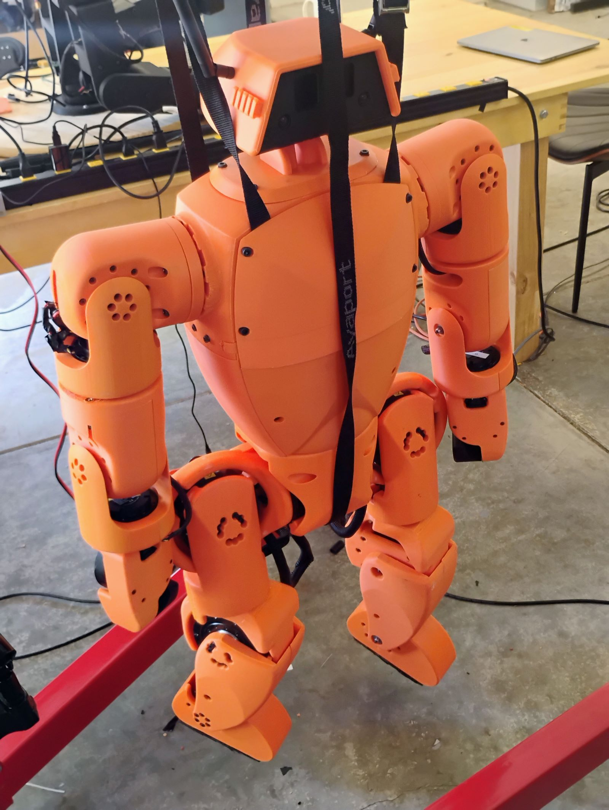

At K-Scale Labs, I designed and built humanoid robots using rapid prototyping. Stompy is meant to be manufacturable by hobbyists or mass producers. First, I worked on a version designed for use in industry, printed from carbon fiber reinforced nylon. I used rapid prototyping to refine the design of a set of UMI-inspired grippers. I also designed a swappable end effector which could hold a MIG welding gun, expanding the robot's capabilities.



I learned audio engineering principles to produce and receive clear audio from low-cost components despite vibration from motors. These were incorporated into Stompy's head, which contained all of the hardware needed for the robot to sense and communicate with the world.

To power the robot, I built a quick-disconnect package around an LiPo Ebike battery, and developed a separate lead acid battery cart for long duration testing.

For mass manufacturing, I designed an alternative named "Jimmy", to be made using CNC machining and sheet metal fabrication techniques.

Later versions refined conduit channels for power and data wires, designed satisfying connectors, and worked toward reliability and aesthetic accessibility. This design was printed from PLA, rather than PA-CF, to reduce costs for hobbyists and decrease print times.
